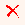

Sõnaartikli kustutamine
Avatud sõnaartiklit saab kustutada Toimetamisalal nupuga Kustuta artikkel . See kustutab artikli baasist lõplikult.
Kui aga on soov artikkel alles hoida, ent näiteks Wordi väljatrükki (pabersõnastikku) teda mitte trükkida, siis määra see artikkel mittetrükitavaks ehk EELexi kõnepruugis "
andmebaasi artikliks" ja sõnastiku vaade säti selliseks, et andmebaasi artikleid ei trükita. Selleks:
- Ava Skeemieditor (Sõnastiku tööriistad -- Skeemi genereerimine) ja seal pane linnuke elemendi artikkel atribuudi artikli staatus ette.
- Pane linnuke Luua ette (Skeemieditori vasakus osas). Kindlasti Salvesta ja Ok.
- Ava Vaategeneraator (Sõnastiku tööriistad -- Vaate genereerimine) ja seal element artikkel. Pane sellele elemendile linnuke Ei trüki. Tee paremklõps tekstil Ei trüki ja avanevasse aknasse kirjuta tingimus: @pref:AS
- Toimetamisalal ilmub nüüd artikli järele nähtavale tema atribuut, mille väärtuseks on vaikimisi HS - sõnastiku artikkel. Klõpsa sellele ja vali AB - andmebaasi artikkel.